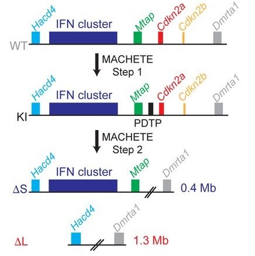
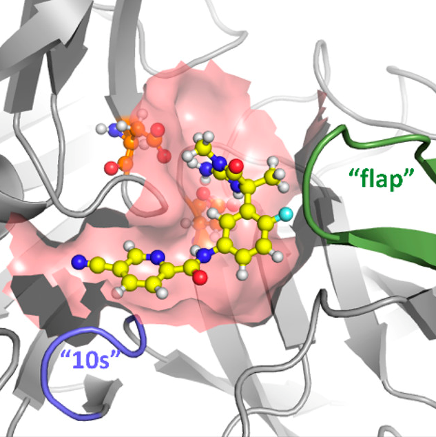
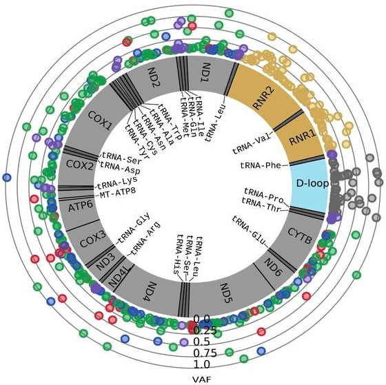

About me
I am a computational biologist with the Single Cell Analysis Innovation Lab (SAIL), led by Dr. Dana Pe'er at the Memorial Sloan Kettering Cancer Center in New York City.
Computational Biologist
Single Cell Analysis Innovation Lab
Memorial Sloan Kettering Cancer Center
I am a computational biologist with the Single Cell Analysis Innovation Lab (SAIL), led by Dr. Dana Pe'er at the Memorial Sloan Kettering Cancer Center in New York City.
|  |
MACHETE identifies interferon-encompassing chromosome 9p21.3 deletions as mediators of immune evasion and metastasisFrancisco M. Barriga, Kaloyan M. Tsanov, Yu-Jui Ho, Noor Sohail, Amy Zhang, Timour Baslan, Alexandra N. Wuest, Isabella Del Priore, Brigita Meškauskaitė, Geulah Livshits, Direna Alonso-Curbelo, Janelle Simon, Almudena Chaves-Perez, Dafna Bar-Sagi, Christine A. Iacobuzio-Donahue, Faiyaz Notta, Ronan Chaligne, Roshan Sharma, Dana Pe’er, Scott W. Lowe. Nature Cancer (2022) |
|  |
Overcoming Challenging Substituent Perturbations with Multisite λ-Dynamics: A Case Study Targeting β-Secretase 1Jonah Z. Vilseck, Noor Sohail, Ryan L. Hayes, and Charles L. Brooks III. The Journal of Physical Chemistry Letters (2019) |
|  |
Landscape of Germline and Somatic Mitochondrial DNA Mutations in Pediatric MalignanciesPetr Triska, Kristiyana Kaneva, Daria Merkurjev, Noor Sohail, Marni J. Falk, Timothy J. Triche Jr, Jaclyn A. Biegel, Xiaowu Gai. Cancer Research (2019) |
Analyzing and creating pipelines for scRNA-seq with current computational approaches such as dimensionality reduction, differential gene expression analysis, and GSEA.
Mapped differential gene expression to proteins in order to investigate phosphorylation patterns.
Prepared reagents and materials for an advanced laboratory biology course.
Maintained and extended MTseeker, an R Bioconductor package that isolates variants in mitochondrial DNA, to trace lineages in single cell samples.
Mentored University of Michigan students one-on-one in Calculus 1 and 2 through the Office of Academic Multicultural Initiatives.
Simulated interactions between proteins and ligands using computational chemistry techniques to determine free energies of binding.
B.Sc Life Science Informatics